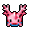
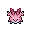

Pokédex / #222

Corsola #222
WaterRock
In a south sea nation, the people live in communities that are built on groups of these Pokémon.
Generation 2 · Johto

Stats
| Attack | 55 | |
|---|---|---|
| Defense | 85 | |
| Sp. Atk | 65 | |
| Sp. Def | 85 |
In the wild
| Wild level | 30–40 |
|---|---|
| HP | 55 |
| Experience | 10 |
| Egg groups | Water 1, Water 3 |
Evolution
- Does not evolve.
Moves
| Level | Move | Type | Category | Power | Energy | Cooldown | Effect | |
|---|---|---|---|---|---|---|---|---|
| 1 | Tackle | Normal | Physical | 15 | 15 | 1s | Tackle is one of the most common and basic moves a Pokemon learns. It deals damage with no additional effects. | |
| 5 | Bubble | Water | Special | 10 | 40 | 3s | Bubble deals damage and has a 10% chance of lowering the target's Speed by one stage. | |
| 10 | Bubblebeam | Water | Special | 65 | 70 | 16s | Bubblebeam deals damage and has a 10% chance of lowering the target's Speed by one stage. | |
| 15 | Rock Blast | Rock | Physical | 25 | 40 | 5s | Rock Blast inflicts damage, hitting the target 2-5 times per use. | |
| 20 | Aqua Ring | Water | Status | – | 100 | 120s | The user surrounds itself with a veil of water, allowing it to restore 1/16 of its max HP at the end of every turn during 16 turns. | |
| 25 | Ancient Power | Rock | Special | 60 | 70 | 14s | Ancient Power inflicts damage and has a 10% chance of raising all of the user's stats by one stage. | |
| 30 | Harden | Normal | Status | – | 70 | 60s | Harden raises the user's Defense by one stage. | |
| 35 | Earth Power | Ground | Special | 9 | 100 | 21s | Earth Power deals damage and has a 10% chance of lowering the target's Special Defense by one stage. | |
| 40 | Brine | Water | Special | 65 | 80 | 15s | Brine inflicts damage, and its power doubles to 130 when the target is at or below 50% health. | |
| 45 | Water Pulse | Water | Special | 60 | 65 | 9s | Water Pulse deals damage and has a 20% chance of confusing the target. | |
| 50 | Rock Tomb | Rock | Physical | 60 | 70 | 13s | Rock Tomb does damage and lowers the opponent's speed one stage. | |
| 55 | Refresh | Normal | Status | – | 60 | 60s | Cures paralysis, poison, and burns. | |
| 60 | Power Gem | Rock | Special | 80 | 90 | 16s | Power Gem inflicts damage and has no secondary effect. | |
| 65 | Stone Edge | Rock | Physical | 100 | 100 | 15s | Stone Edge deals damage and has an increased critical hit ratio. | |
| 70 | Mirror Coat | Psychic | Special | – | 100 | 90s | Any move is reflected back to the attacker. |
Field abilities
DigStrengthRock SmashHeadbutt
Special abilities
HustleNatural Cure
Egg moves
AmnesiaAqua RingBarrierBideCamouflageConfuse RayCurseHead SmashIcicle SpearIngrainMistNature PowerScreehWater Pulse
Technical machines
BideBlizzardCalm MindDefense CurlDouble EdgeDouble TeamEarthquakeExplosionHailHeadbuttIce BeamLight ScreenMimicMud SlapPsychicRageRain DanceReflectRestRock SlideRock TombSafeguardSandstormShadow BallSubstituteToxicWater Pulse
Drops
| Item | Amount | Chance | |
|---|---|---|---|
| water gem | 1–7 | 83.3% | |
| stone orb | 1 | 16.7% | |
| shadow rock | 1 | 14.9% | |
| battle stone | 1 | 13.9% | |
| elemental spike | 1 | 11.9% | |
| heavy stone | 1 | 8.33% | |
 | corsola doll | 1 | 0.1% |
| Splash Plate | 1 | 0.025% | |
| Stone Plate | 1 | 0.025% | |
| TM 11 | 1 | 0.005% |